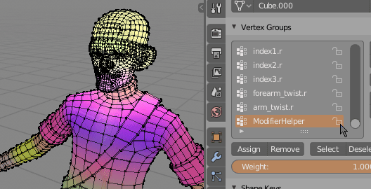

Draw Weights¶
'Draw Weights' is separate free addon (it is included with WPTools on Gumroad). It displays all vertex groups with different color. It is useful for debugging problems with vertex weights, for example if color of vertex is too dark/bright it hints that weights are not properly normalized (sum of vertex groups weights is not 1):
- vertex is dark - weights sum is less than 1
- vertex is bright - weights sum is more than 1
Both cases show you quickly places on mesh that need attention, and vertex weights normalization.
Example of bad weights - you can recognize them by too dark or too bright colours
Note: In later part of this WPT Documentation I will often use 'Draw Weight' addon to show influence of operators on vertex weights.
Location¶
Drawing all vertex weights at once with 'Draw Weights' addon
After installation 'Draw Weights' addon panel will be located in 'Viewport Overlays' popover panel.
Parameters¶
- Merge Colors - give same color to symmetrical vertex groups like: arm.r and arm.l etc.
- Seed - randomize colors
- Polygon Opacity - change overlay transparency
Disabling Weights¶
 'ModifierHelper' vertex group should not be drawn by 'Draw Weights'. Lock it to disable rendering of its influence
If you want ignore some vertex groups by 'Draw Weights' addon, just lock those vertex groups in 'Vertex groups' panel.